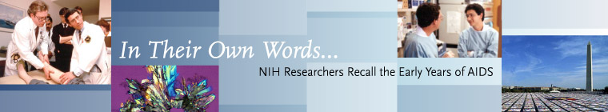

| Office of NIH History | Skip Navigation |
|  |
| Next Page (1 of 8) | Transcripts |
|
Interview with Dr. James Curran, M.D. This is an oral history interview with Dr. James W. Curran, Dean of the Rollins School of Public Health at Emory University in Atlanta, Georgia, on 19 May 1998, about his involvement in the AIDS epidemic. The interviewers are Dr. Victoria Harden, Director, Office of NIH History, National Institutes of Health (NIH), and Dr. Caroline Hannaway, historical consultant. Harden: Dr. Curran, we would like to begin with your background. Could you tell us a little about where you grew up, where you went to college, and where you went to medical school? Curran: I was born in Michigan, went to the University of Notre Dame, and graduated in 1966 in pre-professional studies. Then I went to medical school at the University of Michigan and graduated in 1970. After internship, I joined the U.S. Public Health Service in the Center for Disease Control (CDC) as a commissioned officer to fulfill my military obligation. I was assigned to the University of Tennessee to study the complications of gonorrhea, pelvic infections, and other diseases in women. I spent two years there. Then I went on a career development program with the CDC to the Harvard School of Public Health and Harvard Medical School, where I got an MPH and finished a preventive medicine residency as a fellowship in health services research. Harden: Let us go back a little and ask you to expand on what influenced you to go into medicine. Was it your family? Curran: No, my father was a small businessman. I was the only child. It was a combination of an interest in both science and the humanities. I was interested in public health, without really calling it public health, from the beginning. I was interested in issues related to reproductive health and issues related to world health. So I had a combination of interests in science and the humanities, which I thought was related to health. Harden: Did you have any special professors or anybody else who guided you? Curran: I went to a Jesuit high school, the University of Detroit High School. I think I would say that nobody in particular guided me, but in high school I had the same kind of dual interests nurtured in both humanities and logic and so on, and also science. So I entered Notre Dame interested in pre-med and was successful enough at it that I just stayed in that area. My family was very supportive of my desire to go into this area. [Dr. Samuel] Sam Broder was a classmate of mine in medical school. Hannaway: I was wondering about that when you mentioned the school. Harden: I was going to observe that [Dr. Anthony] Tony Fauci also went to a Jesuit school and both of you speak very well “on your feet” in public. Can that be attributed to your education? Curran: In my high school, we had speech classes in the first, second, third, and fourth years. In high school, that is pretty unusual. Harden: Originally, you did a residency in obstetrics and gynecology. What made you shift towards public health from clinical practice? Curran: I was interested in maternal and child health, and I was in a four-year residency program. The Vietnam War was going on, and all male physicians who graduated either had lottery deferment to finish their residency or could go in the military right away, and then you had the lottery, or a mechanism selecting which service. Or you could have what is called a corps deferment, for the Public Health Service, at the NIH or the CDC. Or you could go into the Public Health Service right away, depending upon certain selection criteria. I had applied for a corps deferment for the Family Planning Service; but at the time the Family Planning Service was authorized but not appropriated. Another colleague was named [Dr.] Jan Schneider–he is the chairman of Ob-Gyn at the Medical College of Pennsylvania, I think. He was a Brit. I had written a paper with him when I was a senior in medical school on midwifery for something called the Victor Vaughn Society at the University of Michigan, which is the historical medical society. I was lamenting to him that I was going to go in the Air Force, but I really wanted to go into public health. Schneider suggested that I come down to the CDC, that there was a family planning unit there, very small at the time, headed by a man named [Dr.] Carl Tyler, at the time the only Ob-Gyn specialist at the CDC. I was not interested in infectious diseases in particular. I came down but found that the EIS [Epidemic Intelligence Service] program was filled up. When I interviewed, I gave them my résumé, which was pretty short. They sent it to what was then the VD [Venereal Disease] Control Division [of the CDC], at the time another small group. They were primarily syphilis experts but now interested in getting into gonorrhea control, and, of course, all they had on their staff were dermatologists. I was somebody who actually knew how to do a pelvic exam and I knew a little about pelvic infections and I was inclined to think about things beyond syphilis. So I had some appeal for them. They offered me an option of going into the Public Health Service instead of going into the Air Force. I was to go with the winner of an RFP [Request for Proposals] to study the medical and economic complications of gonorrhea. The University of Tennessee in Memphis got the award, so I went there. I went to Tennessee to set up shop–I think I was 26–and started to study the complications of gonorrhea, to figure out what was the economic impact of these, how common they were, and to set up a laboratory. I saw lots and lots of patients, and I authored or coauthored 11 papers from work done there. After about a year I decided I liked this and I did not need to be an Ob-Gyn specialist. I was more interested in studying health economics and epidemiology and things like that.Harden: But you were still focused only on gonorrhea. You were not seeing other sexually transmitted diseases? Curran: I was focused on gonorrhea for the first two years. Harden: When did the name change occur at the CDC from "venereal disease” branch to “sexually transmitted disease?” Curran: Maybe 10 years later. Harden: Was that because you were expanding the number of diseases you were investigating by that time? Curran: The list was always larger than the “five traditional venereal diseases.” But the branch, and then the division, went through several leadership changes. Through the time of [Dr.] Paul Weisner, who was the head of the division when AIDS came along, it was still called the Venereal Disease Control Division. I think it was not until [Dr.] Ward Cates became the director that they changed the name to STD Control Division. Certainly the STD name is more representative of the problem. Hannaway: After you had been to Harvard and had done your work in the Department of Health Services Administration there, whom were you working with? Curran: [Dr. Alonzo] Al Yerby. Hannaway: I must admit I do not know him. Curran: He died, I think, last year. He was the chairman of the Department of Health Services Administration. He was an African-American who was a very prominent man. He had been Commissioner of Health. I am not sure if it was in Massachusetts. [Dr.] Julius Richmond was in his department. Hannaway: That is a name that I know. Curran: He was my advisor. I was actually a fellow at a place called the Harvard Center for Community Health and Medical Care, with [Drs.] Paul Densen, Rashi Fein, and Isidore Altman. There were five of us who were fellows, which allowed us to study what we wanted, and also for me to take additional classes after I got my MPH. Hannaway: It must have been quite a transition from Tennessee to the Harvard School of Public Health? Curran: Well, I also met my wife, and today is our 25th anniversary (1998). Harden: Congratulations! Curran: That is how long ago this was. I met my wife in Tennessee. We got married in Tennessee just before we left, and moved to Boston for two years. She went back to school, finished college at Simmons [College], so we were both youngish students then. Hannaway: When you made the transition back to working for the CDC, what did you do next? Curran: When I came back, I took a job with the STD Control Division in Columbus, Ohio. I had this additional training and had developed these perspectives, but I was not sure whether I wanted to go into academia, stay with the CDC, or go into state and local public health. The thing that attracted me to this job was that the CDC–the STD control people in their research branch–had had commissioned officers in Columbus, Ohio, I think, for five years previously. Two of the people were colleagues of mine and were also friends, and the last one had set up a registry for gonorrhea. This was still in the early gonorrhea control days, and he had a huge gonorrhea screening program. But the CDC had the idea at that time of setting up a computerized VD-control registry. This was 20 years before Bill Gates. It was called the VDCSPS, the “VD Control Strategic Planning System.” There were two sites: Denver, Colorado and Columbus, Ohio. My assessment of the situation was that I had an opportunity to make a difference. I had noticed that at Columbus they did not have an assistant health commissioner for medical services and that the job had been vacant for 10 years since the current health commissioner moved up. So, although this job was a research job with the CDC, I offered to be the assistant health commissioner, as a CDC assignee, which gave me responsibility for the clinic, the laboratories, and also the neighborhood health centers. I was also an assistant professor at Ohio State University, so I had a chance to teach as well. Hannaway: You were trying things on every front? Curran: I stayed there for three years, and I really liked it. Then, in 1978, I was asked by the CDC to come and be the chief of the research branch of the VD Division. So my wife and I moved from Columbus to Atlanta. At the time the research branch of the VD Control or STD Control Division had a portfolio of about $3 million worth of studies. They were a combination of intramural-extramural studies. We had sites in Atlanta at the Grady Hospital and local STD clinics, and our physicians worked in these clinics and did clinical studies. We also had extramural contracts to do studies elsewhere. Shortly after I arrived, our branch was debating what type of role it should play in hepatitis B vaccine studies. Actually, what was the Hepatitis Branch at the time was in Phoenix, Arizona, and a man named [Dr. James] Jim Maynard was the head of that, and [Dr. Donald] Don Francis was the assistant director. They were doing studies with [Dr. Stephen] Steve Hadler there, with a man named [Dr. William] Bill Darrow and with [Dr. Sumner] Sam Thompson, both of whom were in our group in Atlanta. The studies estimated the incidence and prevalence of hepatitis B in five communities in preparation for a hepatitis B vaccine trial that was to follow close on the heels of [Dr.] Wolf Szmuness and [Dr.] Cladd Stevens' [ New York Blood Center ] trial in New York. Since our hepatitis studies were being done in STD clinics, and since our division had sufficient funds, it was decided that the CDC needed to conduct this study, without Merck money. So my first decision as a Branch Chief was to use our branch's extramural funds, two million dollars of it, to support the hepatitis B vaccine trials in these five STD clinics. I was not closely involved with the studies, but a couple of our scientists were involved. I attended many meetings and was involved in a lot of the problem solving and administration of the trials. That started in 1978-1979. [Dr.] Harold Jaffe then rejoined the CDC, and Harold was involved in this. It got us in a lot of conversations with many physicians in the gay community in each of these five cities, so that when the first cases of Pneumocystis pneumonia were reported to the Parasitic Disease Division, we already had many professional contacts in the gay community. In May 1981, the first MMWR [ Morbidity and Mortality Weekly Report ] report describing AIDS came across my desk. Harden: Would
you expand a little on when you first learned about these cases that came
to be called AIDS? Was it when this MMWR article was published,
or had you heard about it from other sources, and can you describe your
initial reaction? Curran: I first heard about it when the draft of the MMWR appeared. That article was published on June 5, 1981. Hannaway: So you saw a draft of the original MMWR article on AIDS. |
|
|||||||
| Next Page (1 of 8) | Back to Exhibits | Office of NIH History | NIH| DHHS |